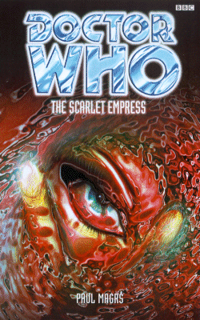

|
The Scarlet Empress
|
BASIC PLOT DOCTOR COMPANIONS MATERIALISATION CIRCUIT PREPARATORY READING CONTINUITY REFERENCES "Nothing is alien, the Doctor occasionally told her, to a citizen of the universe." The Doctor's self-description from The Daleks' Masterplan. Pg 2 "Just after Sam had suggested that a really convincing space-and-time traveling machine ought to have an interior that was completely white and luminous." Now wait, that sounds familiar. Brief mention of the Butterfly Room, originally from Vampire Science. Pg 4 "He was supposed to be an expert in some kind of venusian kung fu." Venusian karate or aikido, harking back to the Third Doctor. "And certainly not beachwear." Probably a reference to the Doctor's bathing suit, last seen in The Space Museum. A reference to jelly babies. Pgs 8-9 "Honestly, Sam, it isn't so long since I was a terrible old duffer who wouldn't tell you what was going on, would shout as you as soon as look at you, would expect you to be quiet and do what I said, and be there to untie me in cellars and scream out when you saw danger heading our way..." The Seventh Doctor of the NAs, fairly obviously, although in what way the second part of the description no longer applies is beyond me. Pgs 11-12 "'This is all about a terrible rogue,' he said tutting. 'He calls up the devil in this story! Gives everyone the runaround. Then he draws evil monsters from the sea. They have the heads of fish and the bodies of men. He enlists monsters and rogues and djinn to destroy his hated, perfect brother. Who always -' the Doctor smiled - 'manages to escape scot-free.'" Really odd punctuation there. In the Aja'ib, the Doctor is reading about the Third Doctor's battles with the Master in metaphor, most particularly The Daemons and The Sea Devils. The 'monsters' are probably the Ogrons from Frontier in Space, and 'djinn' is the Chronovore in The Time Monster. Weirdly, the Doctor fails to note the familiar tone of the stories. Pg 12 "Now he's sold his good brother to his worst enemy! Iron automata possessed by evil spirits." Now that's got to be the Daleks in Frontier in Space. Pg 22 "He slid off the roof and down the wall in one apparently easy movement. But he twisted his ankle when he hit the densely packed earth in the alley." The Doctor twisting his ankle is a play on the normal companion weakness. Pg 25 "Sometimes it wasn't worth the mental effort, trying to drag his waking thoughts to a point before Skaro, London, San Francisco, Lungbarrow." War of the Daleks (or possibly the Telemovie), The Bodysnatchers, Vampire Science (or possibly the Telemovie), Lungbarrow. Pg 26 Mention of Tegan and Turlough. "He had carried her home through a forest" 'Old Flames' from Short Trips. Pg 27 "Because the chilling Time Winds would come creeping and shushing aboard." We saw them and their effects in Warriors' Gate. Pg 28 "'Tickets, please!' called the Doctor. 'I wouldn't have minded being a bus conductor.'" The Doctor's having flashbacks to The Greatest Show in the Galaxy, and he expressed interest in being a train driver in Black Orchid. Pg 32 "After all I've survived! Giant Spiders on Metebelis Three, the Cybermen tombs of Telos, the Drashigs in feeding frenzy on their fetid swamp world." Iris claims the Doctor's adventures in Planet of the Spiders, The Tomb of the Cybermen and Carnival of Monsters. "During her recent escape from Xeraphas." Home of the Xeraphin (Time-Flight) and Kamelion (The King's Demons). Brief vacation spot for the Master. Pg 38 "'Iris is rich,' said the Doctor. 'How rich?' 'Richer than Croesus. Richer than you can imagine.' 'I don't know. I can imagine quite a bit.'" The Trial of a Time Lord. Pg 40 "'Which regeneration?' 'Seventh,' he said. 'This is my eighth self.'" We knew that. The description's consistent with how the Doctor presents the information in The Five Doctors. "And my last body I kept for ages." 1987-1997, it turns out. Pg 41 "You can't hold back death, Iris." The Telemovie. Pg 42 "Davros, Napoleon, Al Capone, the Rani, Hitler." These are people that the Doctor has collaborated with, apparently: Genesis of the Daleks, Napoleon remains uncertain (despite appearing in The Reign of Terror and The Sands of Time), Blood Harvest, Time and the Rani, Timewyrm: Exodus and The Shadow in the Glass amongst others. Pg 45 "He found the small kitchen compartment at the back of Iris's bus, and started preparing breakfast on the old Baby Belling. Sam woke under heaped blankets on the sand to the smell of bacon grilling and the sound of the Doctor singing along, loudly and off-key, to Puccini." He cooked breakfast back in Vampire Science and often since. Puccini refers to the Telemovie. "She was going on about Sontarans and perverting the course of human history." The Time Warrior, also quoted in Robot. Pg 48 "So the Doctor met Oscar Wilde?" We knew that, actually, him having mentioned it in Genocide. Pg 49 "Now they've found some way of making themselves invisible, on a planet where the natives are naturally invisible, and can only tell where each other is by wearing immense purple fur coats." Planet of the Daleks. What makes this particularly weird is that Sam saw Spiridons in purple cloaks on Hyspero on Pg 1. Pg 50 "She's got a memory like a... like an elephant." Like Mel. Pg 58 "Look at vampires, Sam." Vampire Science. Pg 59 "'Seven of me were taken to the Death Zone on Gallifrey. Someone had reactivated the Games they used to play there. Each of my selves, present, past and future, was given a relevant companion and playmate, and we were forced to battle our separate, and then collective ways, past Ice Warriors, Ogrons, Sea Devils, Zarbi, Mechanoids and Quarks, to get to the Dark Tower. Good job we only got rubbishy monsters to battle, eh?' The Doctor was staring at her. 'It was that devil Morbius behind it all. The rogue was after Rassilon's gift of immortality.'" A reworking of The Five Doctors, obviously, but also by way of The Ice Warriors, Day of the Daleks, The Sea Devils, The Web Planet, The Chase, The Krotons and The Brain of Morbius. Pg 63 "Iris talked vaguely of growing up in a matriarchy, among women much older than herself, her Aunts, she called them." A reflection of Lungbarrow. Pgs 63-64 "Her mother had vanished when Iris was quite small, into the dawn with a man who was a great deal older, an offworlder." Iris may be half-human, on her father's side. Pg 64 "And at the end of it, she discovered a race of charlatans, quivering old men who knew all the secrets of the cosmos, it seemed, but preferred to spend their time in eternal, futile politicking." The Deadly Assassin et al. "And, even though their president was a woman." It's unclear who this was. It would seem be too long-distant for it to have been Flavia or Romana, but it's not beyond the realms of possibility. "You've never been put on trial, exiled, summoned to carry out ridiculous tasks, dragged back to your ancestral home to atone for sins that weren't even yours..." The War Games, Spearhead from Space, The Brain of Morbius et al, Lungbarrow. Pg 67 "'It certainly looks that way,' said the Doctor. 'Tabula Rasa'" Which is what will happen to him in about 20 books' time. Pg 68 "Even my rackety old TARDIS can manage short jaunts." This is Tegan's description of the TARDIS from The Five Doctors. Pg 72 "'We have to get all the way back up there,' Iris was saying sardonically. 'How do you suggest we manage that?' 'Fly?' said Sam." Echoes of City of Death. Pg 76 "He fiddled around in his capacious pockets. He produced a glob of pink jelly with tendons and suckers. 'A Zygon... um, artifact?' The kabikaj snorted in derision. 'A Dalek gun-stick?'" The Bodysnatchers, War of the Daleks. "No ordinary jewel. It is from Metebelis Thee, in the Acteon galaxy." Oh, Gods preserve us. It's that damned crystal from The Green Death and Planet of the Spiders again. Actually, it turns out to be from the Portobello Road market, and not the famous blue crystal at all. Pg 78 "When she was telling us all about being involved with saving the Federation envoys trapped on Peladon." The Monster of Peladon. Pg 85 "I skim so fast sometimes I don't even know what I'm reading." City of Death, Rose etc. "I am free to browse, to skim, to sample, pluck, rummage, unpick, deconstruct, misread and in general randomly choose what I want from your splendid - if rather limiting - one thousand and one volumes." This is, in fact, what the Doctor does to history. Pg 91 "A partially dismantled and useless etheric-beam locator." Genesis of the Daleks, The Curse of Fatal Death. Pg 94 "She had encountered quite as many tinpot dictators, conspirators and deadly assassins as the Doctor." The Deadly Assassin, presumably. Pg 99 "As Sam sat herself down on damp stone to wait, she thought she could even hear the chlorophyll chugging through the fat, translucent veins of the plants around her." Why am I suddenly put in mind of The Keys of Marinus? Pg 101 "The native Chelonian version of Cinderella had to be seen to be believed." Chelonians are from The Highest Science originally, and numerous other books thereafter. Pg 104 "The Doctor had been there, he knew (as did, curiously, Iris) that the Death Zone was actually no larger than North Wales." This is an in-joke about The Five Doctors. See if you can work out what it is. "About the race of men built from molten silver, whose innards ran with mercury, who emerged from deep beneath the world's icy crust." This is the Aja'ib, now telling the tale of either The Tenth Planet, The Tomb of the Cybermen or Attack of the Cybermen, most likely the former. Pg 105 "Let me find the bit about the vast white bird who roosts at the beginning of time." This could be a Chronovore, perhaps, from The Time Monster. "What was the point of a respiratory bypass system if you didn't give yourself time to use it?" A massive retcon that explains how the Doctor has frequently been gassed despite his handy lungs. Pg 108 "The Doctor was intrigued - he had never met anyone made entirely of glass." But he will, soon. See Sometime Never... Pg 110 "The metal automata he had read about in those very paragraphs, slicing the air with bolts of lethal radiation." The Daleks. You begin to get the idea that the Doctor doesn't recognize them because he's visualising an image of the description, which isn't, to him, Daleks. But they're Daleks, nonetheless. Pg 116 "Remember Venice and those awful fish people, and Wilde, and -" Possible future reference to The Stones of Venice. Pg 119 "Even the bats squealing in the tallest recesses of the almost invisible ceiling." The Telemovie. "In her mind she could wander around , from the library to the door behind through which there was a whole grassy hillside, swarming with millions of butterflies." Vampire Science. "The scaled, silvery forms of slumbering Skarasen lay everywhere on the bare stone." Sam has a dream sequence to events just after The Bodysnatchers. Pg 120 "Even the Volkswagen Beetle parked in one recess." The VW Bug, first seen in Vampire Science and soon to die in Unnatural History. Pg 121 "Sam followed and the short trip seemed to take hours." It's possible that this is a judgement on how long it feels like it takes to read a goodly number of the stories in the first BBC anthology Short Trips. Or maybe how long it took Magrs to write his one. "All seven heads started talking at once. 'Really, Doctor, this is hardly -' 'You see, my dear, it's very simple...' 'I'm not exactly breaking the Laws of Time, but -' 'There were once three sisters and they lived at the bottom of a treacle well...' 'Only in the direst of emergencies can you -' 'Nice? Nice?' 'I saw this coming.'" These are great characterisations of the first seven Doctors in but one sentence, particularly the last two. For the record, Lloyd Rose used the comment about the treacle well in her biography at the back of The City of the Dead and the fourth Doctor says it in The Android Invasion. Pg 126 "Once he had seen a Skarasen alone, an exile from its natural habitat." Terror of the Zygons. "Yet he had managed to survive. He managed. He went forward in all his beliefs..." The Dalek Invasion of Earth/The Five Doctors. Pgs 126-127 "She had pieced together enough of his sketchy previous life to know that once he had spent time in England, forced to stay there by his own people. Exiled, he had tried to acclimatise himself to England of the seventies." Spearhead from Space et al. Pg 127 "In my very earliest years, the Doctor was already world-weary and stuck. He had lived in a dilapidated Victorian house in Kent." The house on Allen Road from the comic strip Fellow Travellers originally (first seen in the NAs in Cat's Cradle: Warhead). "He earned his keep on Earth by repelling unfriendly alien incursions, and the nefarious schemes of a rival, known only as the Master." The Third Doctor years. The Doctor literally earns his keep this way in Verdigris. Pgs 130-131 "You've grown scared of your own shadow." This may well be foreshadowing of the involvement of Faction Paradox in the Doctor's life. See Unnatural History and Interference. The line is also a misquote from The Five Doctors. Pg 131 "Look at the Master - that pitiful, deluded, phallocentric dope." Iris would not be the first to point out that the Master's TCE looks like the male genetalia. Nor, I imagine, will she be the last. Reference, again, to The Dalek Invasion of Earth and The Tomb of the Cybermen. "In my version it was me. With my glamorous young assistant Jeremy." Very likely a namecheck for Jeremy Hoad, Magrs' co-author on The Blue Angel. Pg 132 Sam looks at a map which shows Sam looking at the map in the map room: "Infinite regression, the Doctor had called it once." Like Castrovalva. Pg 134 "Like a dying man again and again, I've seen my life flashing before my eyes." It'll be once a season, ever since Logopolis. "It rather reminds me of that sleigh trip I made on the ice felds of Myrrh... oh, I don't know how long ago, in a very crampd space for two whole months with those little fellows who looked like poodles." Possible forward reference to Mad Dogs and Englishmen. Pg 135 "Thse memories do disturb me because, once she has cheerfully triggered them, they are quite definitely there." Comment on the Missing and Past Doctor Adventures. Pg 136 "Set tongues wagging on the Left Bank. You claimed to have just come from Spiridon, which was overrun by half-frozen Daleks..." Planet of the Daleks. Pg 139 "It was he who gave me a ticking off for still calling (rather picturesquely, I thought) the Earth Reptiles we had both encountered Silurians and Sea Devils." Another age-old argument that has never been resolved, despite numerous attempts, beginning in The Sea Devils. Pg 141 "Jo Grant once told me that about a bunch of chickens we met. She laughed at me for being overly polite." Carnival of Monsters "You'd flung yourself into the French Revolution." Possibly a reference to the trip that Susan references in An Unearthly Child and The Reign of Terror, but possibly not as the story's being told by Iris and she may well be making it all up. Pg 144 "A religion of himself, and he is the pure martyr setting his sensible feet firmly towards the Dark Tower. Tower, Sam - he is leading you towards one more confrontation with the father and the phallic Tower is the last, black card in the Doctor's pack." This appears to be a startling predestination of what is to come, other than the fact that Sam got out before it happened: The City of the Dead suggests that the Tower card in the Tarot pack is associated with Gallifrey's destruction in The Ancestor Cell. Couple this with the reference to 'the father', and you're damned close to what happened. Pg 146 "He was woven from genetic broth, a Loom, on a Patriarchal world without mothers - though sometimes he believes he was birthed of a more Earthly mother. He doesn't know." Lungbarrow and the Telemovie. Him not knowing is actually the best reason I've heard for the confusion. "He wants to appropriate his point of origin only for himself and die there." This sounds like Four to Doomsday. Pg 148 Mention of Romana and Alpha Centuari, the latter from The Curse of Peladon etc. Pg 149 "Where the snow was fierce and daily, keeping us trapped in the house that was rooted into the rock by hundreds of storeys." Which sounds just like the burial of the house of Lungbarrow. Pg 150 "My Baba, who had a shawl that could carry her anywhere in the world." This actually sounds like the Russian folk-tale of Baba-Yaga, again suggesting that Iris is creative when it comes to the truth. Pgs 153-154 "Which had been about how he was sent to avert the genesis of the dreams and desires of one particular historical despot." Genesis of the Daleks. Pg 154 "Have I mentioned the vicious slime-like beast in the pit that only I could befriend and talk to?" The Creature from the Pit. Pg 155 "Or when I was forced to battle a multi-legged fiend that secreted acid from every pore in an arena watched by some million or more?" The comic strip The Iron Legion. "Or the world at the edge of the cosmos where I fell into a puddle and met the last known and very strangest creature in the world?" Planet of Evil. "Or when I went to the centre of the world and met people for whom time had stood still?" Possible reference to Doctor Who and the Silurians. "Or the demon who lived under a church and unleashed himself one sacred night when -" The Daemons. Pg 159 "It was in a kind of Ancient Rome, the heart of the Empire that had never collapsed and had instead developed transdimensional travel." The Iron Legion again. "The variables might be Sontarans, Aggedor, Zarbi, Sarah, Jo, Metebelis Three, Solos and so on. And then I could give you a whole lot of plot devices, such as building a hot-air balloon to escape, finding a ventilation shaft to shin up, sabotaging a computer in someone's control room with a display of confounding illogicality, or hypnotising a possessed lackey to discover an enemy's secrets." Gosh. A how-to-write-a-seventies-story guide which would have been more convincing had this one actually been any good. For the record: The Time Warrior, The Curse/Monster of Peladon, The Web Planet, Sarah-Jane, Jo Grant, The Green Death/Planet of the Spiders, The Mutants, Planet of the Daleks, any number of stories, The Green Death, The Hand of Fear. Pg 165 "Although he'd been in some pretty spectacular scraps in recent years. Jumping off an Ice Warrior ship over Central London. Scuba diving with Zygons. Causing havoc once again on Skaro." The Dying Days, The Bodysnatchers, War of the Daleks. Pg 167 "Sam Sam Sam Sam Sam!" We've gone a whole 166 pages without the monosyllable treatment. But it is back. Pg 168 "In the ghastly quavering shadows from the fire, Iris looked already dead. The flesh, it seemed, had dropped off her. She looked skeletal." I might be seeing things by now, but this is much as the Doctor looked at the bottom of the Pharos project in Logopolis. Pg 169 "'Sleep is for -' 'Tortoises, I know.'" The Talons of Weng-Chiang. Pg 171 "It's the brain of Morbius all over again." After many days of research, we are prepared to suggest that this is a reference to the adventure called The Brain of Morbius. Pgs 174-175 "And information is what she desires: facts, figures and personal impressions from trusted gatherers worldwide. From all this compacted, received wisdom she compiles her magisterial sense of the world. Poised in her jar, the Empress catalogues the reports of envoys and mentally ticks over the parameters of her world." The Empress here seems to be a deliberate parallel of the Earth Empress in So Vile A Sin, given that they function, in essence, in exactly the same way. Pg 175 Another mention of the word 'verdigris'. Mention of the Dalek-like movement of crinoline dresses. Pg 178 "Um... shall we do that funny mind-melding thing and update each other by telepathy." The Three Doctors. Pg 179 "I had high tea with a Draconian prince in his mansion keep in the mountains. For the sake of manners I took the challenge of eating raw, still-live Kaled mutant from the shell." Draconians from Frontier in Space, Kaled mutants from Genesis of the Daleks. How the one managed to get hold of the other in the circumstances is anybody's guess. Pg 182 "'Why all this fighting talk?' Sam hissed at him. 'Sometimes,' he replied, 'you have to talk to people in their own language.'" The Daleks. Pg 189 "'You've never been [...] forced to wear the robes of great office.' 'You'd be surprised,' he says." The Invasion of Time. Pg 193 "'You don't like spiders,' Gila smirked. 'Not much.' The Doctor looked abashed." Planet of the Spiders. "Did I ever tell you about the time I had to go into the cave of the Great One?" Planet of the Spiders. Pg 200 "Did you ever meet my friend Kroton? He was a Cyberman whose kill-kill-kill-enslave-destroy function had never quite kicked in." Kroton the Cybermen was a companion from the comic strip. Pg 204 "The world was forever in a state of change and flux." Hyspero is described deliberately as the opposite to the description of Gallifrey in The Deadly Assassin. Pg 207 "I remember a Doctor who claimed to have been instrumental at Trafalgar." Probably World Game, although we didn't know that then. "Major Angela had found it necessary to put paid to the machinations of a powerful vizier called Sit al-Husn." The translation of 'Sit al-Husn' is 'Master of Beauty', interestingly. "For raw material he had been using the cannibalised spare parts of a colony of human beings." This sounds a little like the origin of the Cybermen. But it may also be a reflection of Castrovalva, although the means of creating a bunch of creatures was different then. Pg 208 "The team of three had become four and they had banished the vizier to Z-space." If the vizier (Sit al-Husn) is the Master, then this really does sound like Castrovalva, with the created beings and the banishing. Z-space, especially if pronounced with the American "Zee", is probably a reference to E-space, seen in Full Circle through Warriors' Gate. "Oh, and then about a year later that same vizier had returned to take over all of Hyspero, his strength redoubled and his powers charged by a mysterious scimitar he had found deep in Z-space." And therefore this sounds like a metaphorical rewrite of Time-Flight. Pg 219 "'Or,' said the Doctor, 'it looks like Excalibur.'" Battlefield. Pg 220 "That ship is the Kristeva." Faction Paradox member, Uncle Kristeva later appears in The Ancestor Cell. Make of that what you will. Pg 234 "I want to know what if, I mean, what happens if it was in fact you who defeated the Dalek invasion of Earth? What if you opened the Cyber Tombs on Telos? What if you were the one who was there when the Great Fire of London broke out?" Metaphor's getting a bit thick, isn't it? The Dalek Invasion of Earth again, The Tomb of the Cybermen again and, newly referenced on this occasion, The Visitation. "Perhaps he should have all his hair cut off." Interestingly, the version of the Doctor we see in The Infinity Doctors is indeed this one with all his hair cut off. The Infinity Doctors came out a month after The Scarlet Empress. Pg 235 "She was thinking about the Doctor. Thinking about first wandering into his Ship. About their first months travelling together, how breathless and hair-raising it had all been. Their time of separation. Their reunion." The Eight Doctors, the early EDAs, Longest Day through Seeing I. Pg 239 Reference to Daleks and the phrase 'boldly going', which I'm sure should remind me of something. Pg 241 "Memory always cheats." JNT's catch-phrase during his tenure as Producer. Pg 250 "We're flying, I mean, through the vortex. I mean - vworp vworp: there in a flash." This was the comic strip's description of the TARDIS materialisation. Pg 269 "He'd dealt with viruses the size of lobsters, lobsters the size of dinosaurs and dinosaurs and other horrors again and again in his hectic career." The Invisible Enemy, The Macra Terror and Invasion of the Dinosaurs. Pg 272 A third and final appearance of the word 'verdigris'. OLD FRIENDS AND OLD ENEMIES NEW FRIENDS AND NEW ENEMIES A waitress. A jailor. A barmaid and various tavern denizens. Some shaven bears, including Sutt. A big, scary spider. Cassandra. (Not the one from The End of the World and New Earth.)
CONTINUITY COCK-UPS PLUGGING THE HOLES [Fan-wank theorizing of how to fix continuity cock-ups] FEATURED ALIEN RACES The ones we've heard of: Draconians, Spiridons, Martians, ambling tortoises (probably Chelonians) The ones we haven't heard of: sharklike bipeds, yacanas, viridian-fleshed lizard women, Djinn (corpse-eating ghouls), Kabakaj (insect-controlling spirits), a steigertrude (with little tusks), and a Sambehart. Native Hysperons have long, solemn faces and beige flesh tones. FEATURED LOCATIONS IN SUMMARY - Anthony Wilson |
|
 |